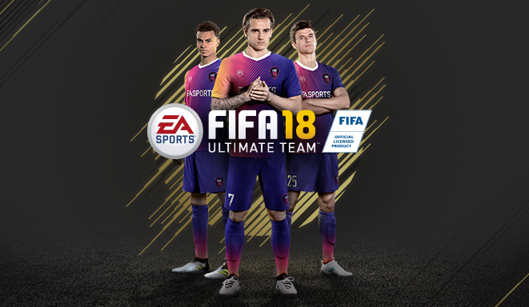
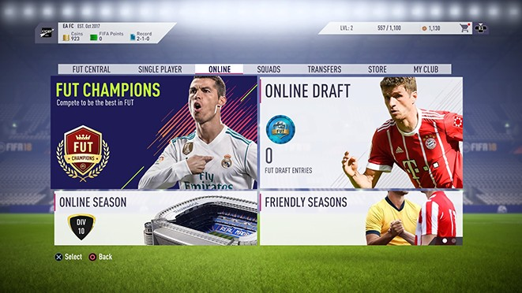
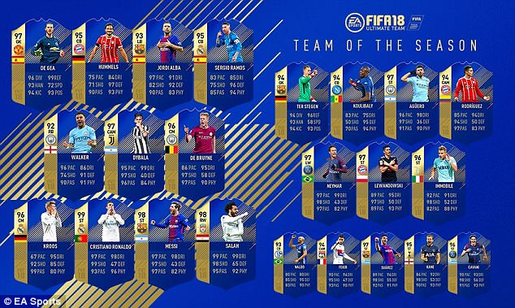
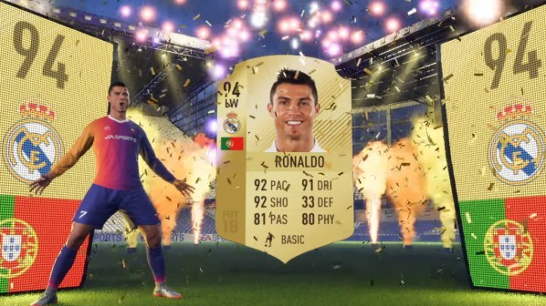
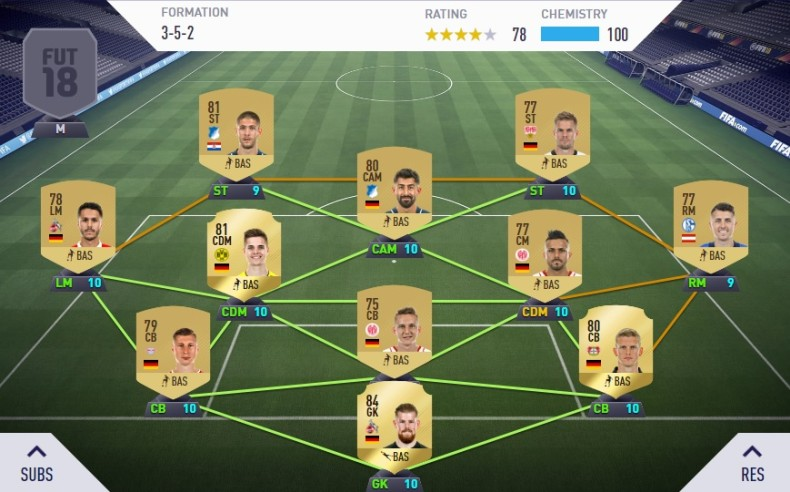
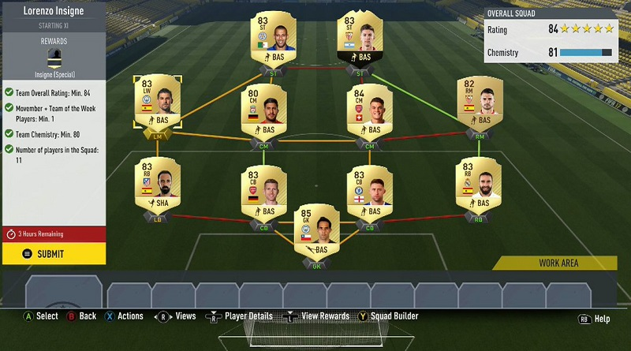

Utimate Team
Ultimate Team, a pearl EA Sports. The most fans, the biggest money. This is their only mode in which buyers for cash, have an advantage over playing without. In this mode skill are everything, then the composition. We don`t need instructions to play. EA create tutorial, which guides you step by step. The difference between Pro Clubs, Ultimate Team is huge, there are two different modes. In one you rely on others. In the second you just have to decide for yourself.You control the whole team and against you have an opponent who also controls an inch eleven. Thanks to an independent game, there is a pool of professional players earning money in this mode. He creates many tournaments in the world, EA also creates Fut Champions Qualification. In a word, everything is around the money. And as you know, when a person sees money, he behaves differently than when he plays for pleasure. The rules of the game are simple, you create your club, choose formations and match players. And here are made the stairs, when you will have good players. You must sacrifice a lot time. And even when EA started to influence the market, the prices of competitors jump drametrally.Only playing isn't enough, there is a lot of money when you open pack, but you must counting that something good fall out. supervise the market and adapt to it or buy the pack for cash. If you never played, you must try. For new player it`s self fun. For a veteran is nuisance. How many times you played this mode, you wanted to destroy controller. Someone done it. There is this simple explanation, playing in this game for X edition and playing daily after three hours. Thanks this mode can we see the schematics and many errors. It is here that many "fifa fails" movies are made.No yep, i can myself saying, this is cast game and he have always errors. But how many times would I not say it, it's pissed me off. Forgive me, but after 8 years of experience with this game. I have enough to see the same errors in this game. Ultimate Team is good, nice for eyes, dynamic. You can play everyone, win with everyone. My advice, if play for pleasure, don`t overdo it with hours of sitting. After a long time it tires, and if you rest a few days, you will start to enjoy this game again. The most important is the distance, no matter whether you lose or win. It would be important to be happy. That's what I missed, that's why I gave up, there is nothing to beat. Play what you like, not what you need.